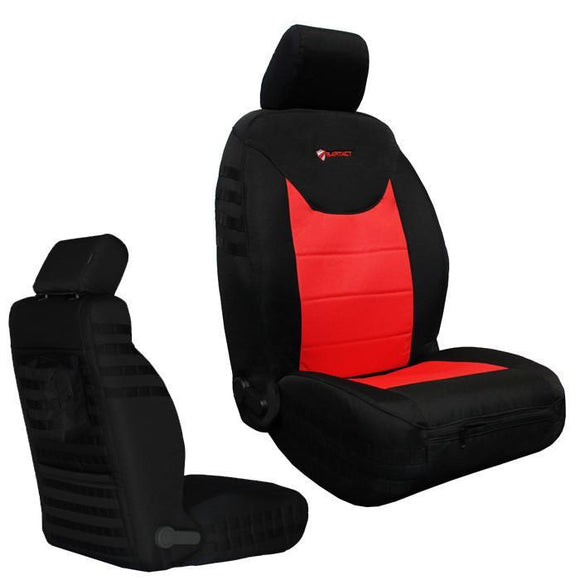

How to Install Tactical Seat Covers (Step-by-Step)
One of the biggest concerns people have about seat covers is installation. Will it take all day? Do I need tools? Will it look like a trash bag stretched over my seat?
The answers depend almost entirely on one thing: custom-fit vs. universal fit. Custom-fit covers are designed for your exact seat shape and install in 15-30 minutes with zero tools. Universal covers are a wrestling match that never quite ends.
Here's everything you need to know about installing tactical seat covers — done right.
Custom-Fit vs. Universal Fit: Why It Matters for Installation
Before we get into the steps, this distinction is critical:
Custom-fit covers (like Bartact) are designed and patterned for a specific vehicle, year, and trim level. Every contour, headrest opening, and airbag seam is mapped to your exact seat. They slip on with purpose — each panel knows where it's supposed to go.
Universal-fit covers are one-size-fits-most. They use elastic, drawstrings, and hope to conform to seats they were never designed for. Installation usually involves a lot of tucking, pulling, and accepting that it'll never sit quite right.
If you've ever tried universal covers and thought "seat covers suck," you were actually thinking "universal covers suck." Custom-fit is an entirely different experience.
What You'll Need
For custom-fit tactical covers like Bartact, you typically need:
- The seat covers (obviously)
- Your hands
- 15-30 minutes per row
- That's it — no tools required for most custom-fit installations
Some vehicles may require moving the front seats forward or adjusting the headrest, but you generally won't need wrenches, zip ties, or any of the other stuff universal covers demand.
Step-by-Step Installation (Custom-Fit)
Step 1: Identify Your Pieces
Lay out all the cover pieces and identify which goes where. Custom-fit covers are usually labeled (driver front, passenger front, rear bench, etc.). Bartact covers include clear labeling and instructions specific to your vehicle.
Step 2: Remove Headrests
For most vehicles, you'll need to remove the headrests first. On Jeep Wranglers and Gladiators, press the release button at the base of the headrest post and slide it up. On Tacomas and 4Runners, there's a similar release mechanism. Set headrests aside.
Step 3: Slide the Backrest Cover On
Start with the seatback (backrest) cover. Slide it over the top of the seatback like a pillowcase. On custom-fit covers, the airbag seam will line up with your seat's airbag location — make sure it's positioned correctly. Pull the cover down and tuck the bottom flap between the seatback and the seat bottom.
Step 4: Install the Seat Bottom Cover
Drape the seat bottom cover over the seat cushion. Align the front edge first, then pull the back edge down and secure it underneath the seat. Most custom-fit covers use hooks, straps, or elastic loops that attach to the seat frame underneath — no tools needed.
Step 5: Secure All Attachment Points
Go around the seat and fasten all straps, hooks, or elastic connectors. Pull everything snug — you want the cover tight against the seat with no bunching or sagging. This is where custom-fit shines: the attachment points are in exactly the right positions for your seat, so everything pulls tight naturally.
Step 6: Reinstall Headrests
Slide the headrests back through the cover openings and into the seat. Custom-fit covers have pre-cut headrest holes that align perfectly with your posts.
Step 7: Final Adjustments
Sit in the seat and make sure everything feels right. Smooth out any wrinkles, re-tuck anything that shifted, and check that the cover isn't blocking any seat adjustment levers or mechanisms.

Common Installation Mistakes
- Skipping the headrest removal. Trying to install a backrest cover without removing the headrest first leads to stretching, misalignment, and frustration. Always remove headrests first.
- Not tucking deep enough. The flap between the seatback and seat bottom needs to go deep into the gap. If it's loose, the cover will ride up over time.
- Ignoring the airbag seam. On covers with SRS airbag compatibility (like Bartact), the stitched airbag seam must align with your seat's airbag deployment zone. If it's off, the airbag may not deploy correctly in a crash. This is non-negotiable.
- Loose straps underneath. Dangling straps under the seat can interfere with seat motors, rails, or wiring. Make sure every strap is secured snugly and nothing is hanging loose.
- Installing in direct sunlight. Materials are stiffer when cold and more pliable when warm. Install in a garage or shade for the easiest experience.
Never use seat covers that block or interfere with side-impact airbags. Look for covers specifically designed with SRS-compatible seams that allow the airbag to deploy through the cover in a crash. Bartact covers are SRS airbag compatible with reinforced breakaway seams. Cheap universal covers rarely account for airbag placement and can prevent deployment — this is a serious safety issue.
Tips for Universal-Fit Covers
If you're installing universal-fit covers (we don't recommend them, but we get it — budgets exist), here are some tips:
- Use bungee cords or zip ties underneath to keep the cover from sliding
- Accept that there will be bunching around the bolster areas — universal covers can't match seat contours
- Check airbag compatibility carefully — most universal covers do NOT have airbag-compatible seams
- Re-tighten everything after a week of use, as universal covers tend to shift and loosen over time
How Long Does Installation Take?
| Cover Type | Front Row | Rear Row | Tools Needed |
|---|---|---|---|
| Custom-fit (Bartact) | 15-20 min | 15-20 min | None |
| Universal fit | 30-45 min | 30-45 min | Zip ties, bungee cords |
The Bottom Line
Installing seat covers doesn't have to be painful. If you buy custom-fit covers made for your specific vehicle, installation is straightforward — no tools, no wrestling, no compromise. The cover fits because it was made to fit.
If you're shopping for covers for your vehicle, our year-make-model search will show you exactly which covers are available for your seats.
Find custom-fit covers for your vehicle
Search by Year, Make & Model →